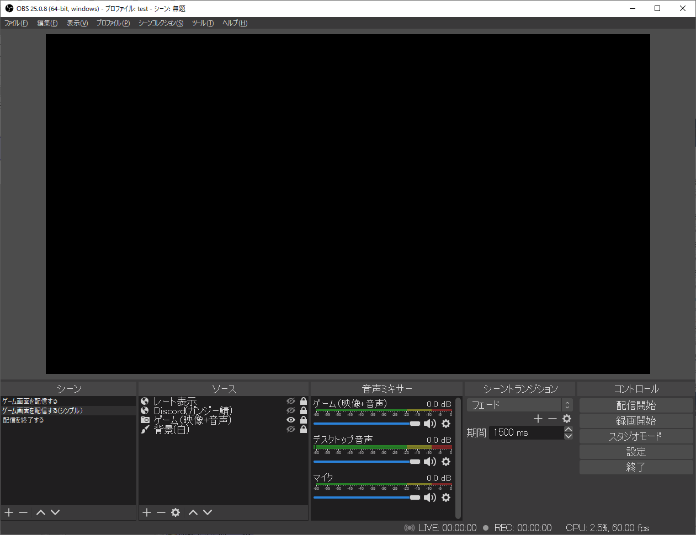
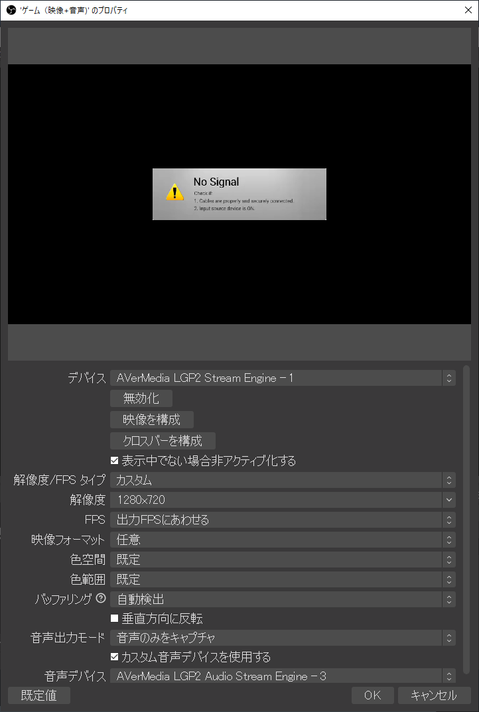
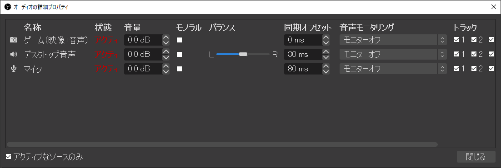
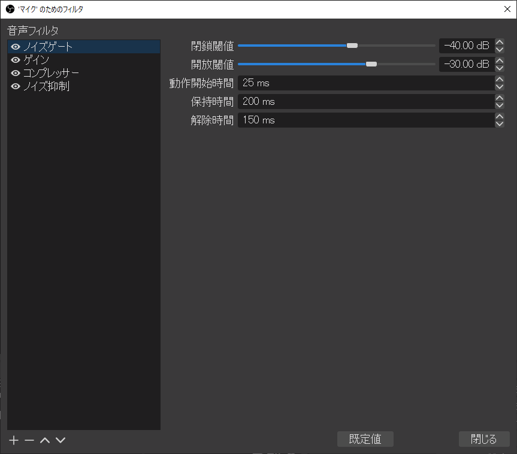
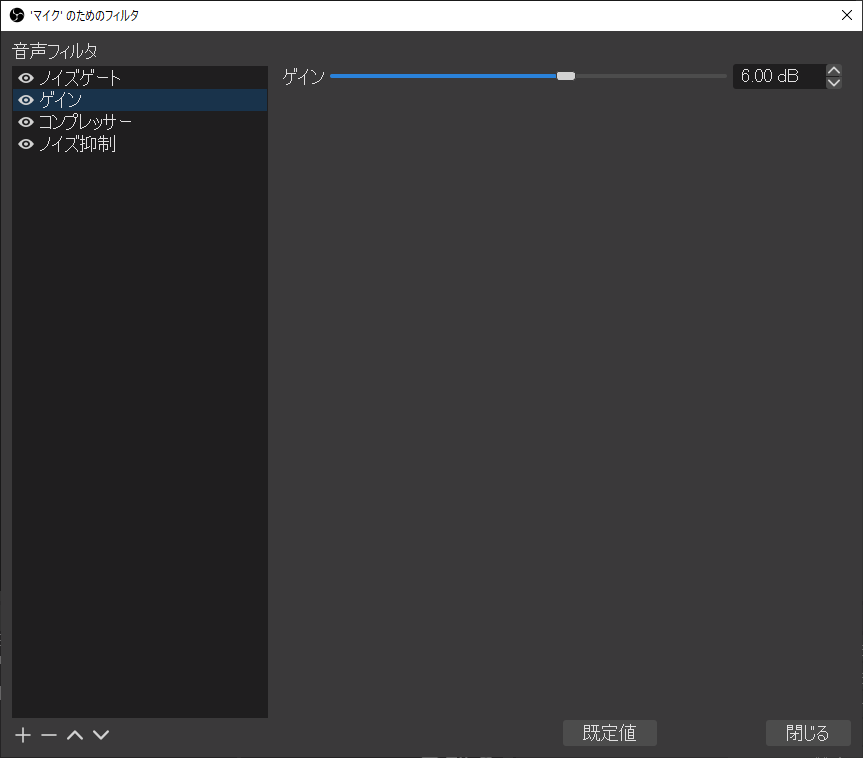
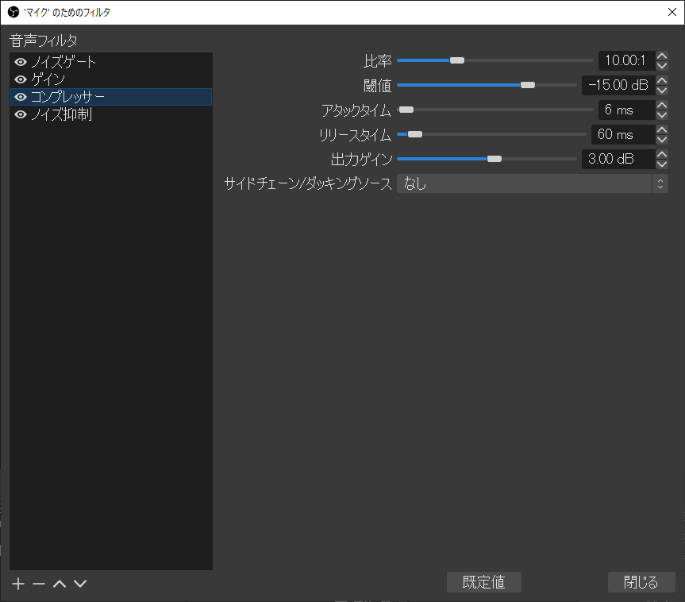
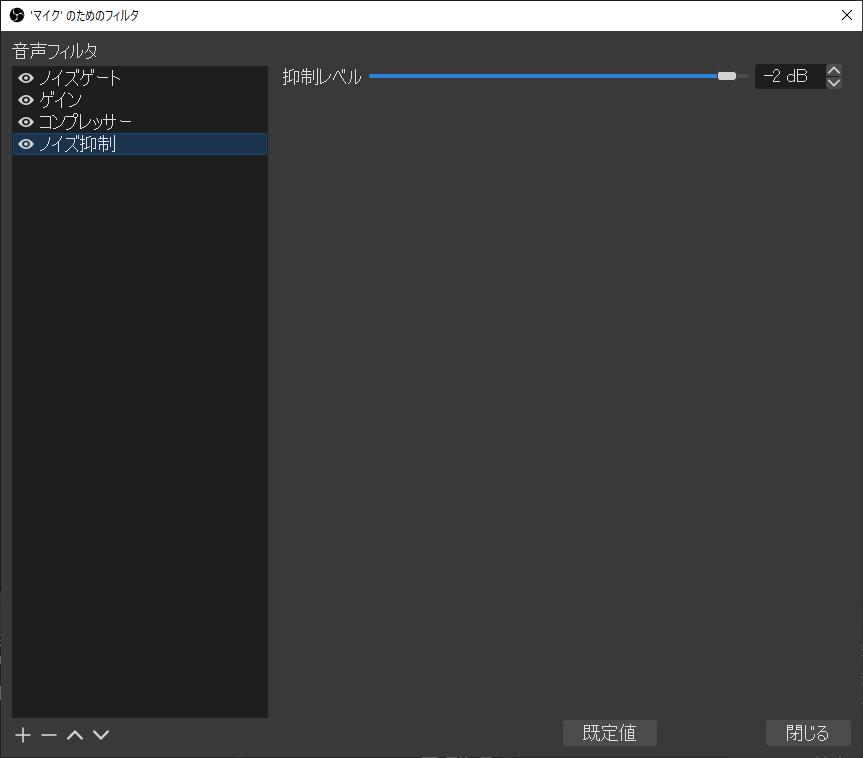
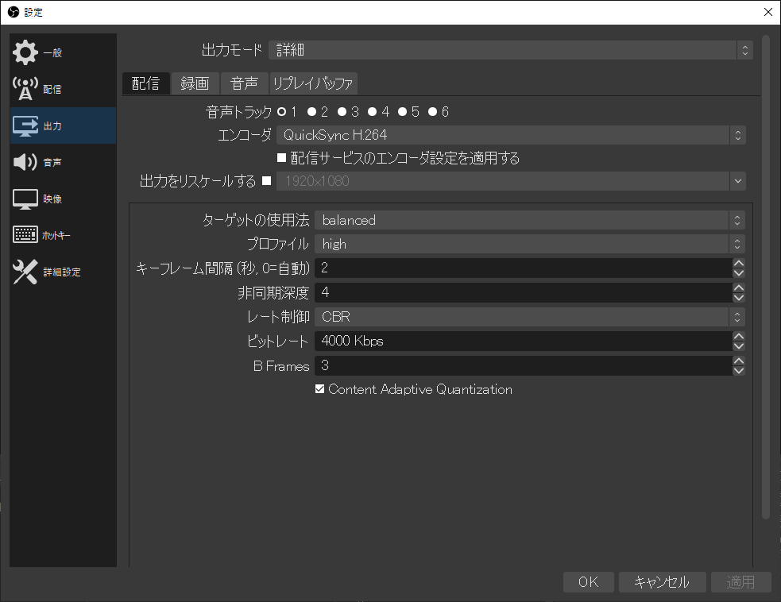
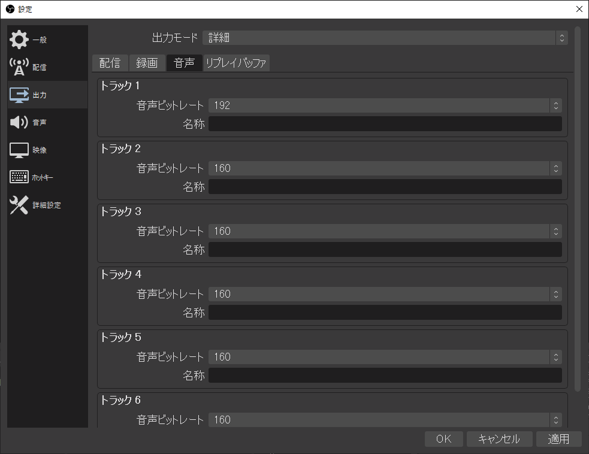
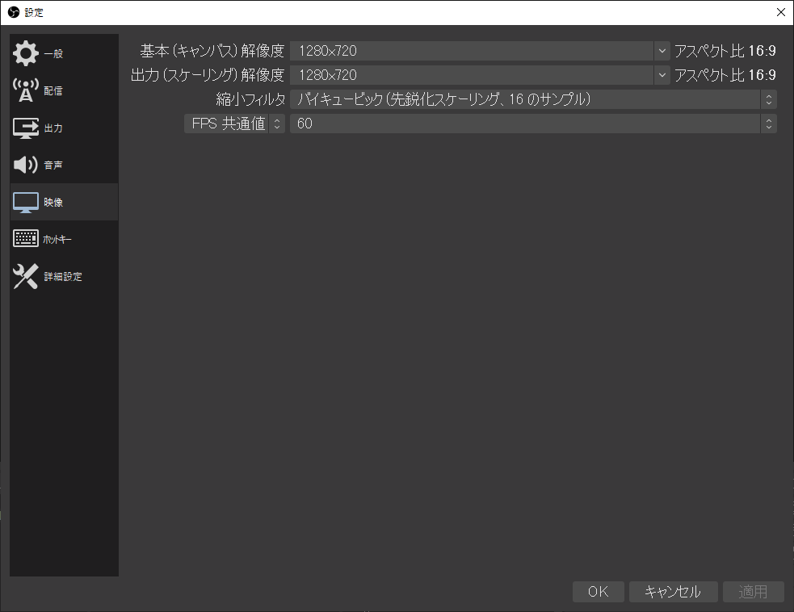

OBS Studioの設定
OBS Studioで使用している設定を以下に示します。
シーンとソース
そんなに凝った配信はしていないので、ソースはほぼ「映像キャプチャデバイス」しか使っていません。
配信を終わるときに画面を暗転させるために「配信を終了する」シーンを用意してあります。ただの真っ暗なシーンです。
映像キャプチャデバイスのプロパティ
こんな感じです。設定内容は使用しているキャプチャーボードによって全然違ってくると思います。
解像度は1280x720にしています（どうせ配信の解像度が1280x720なので）。
オーディオの詳細プロパティ
マイクとデスクトップ音声の同期オフセットに「80ミリ秒」を指定しています。マイクとデスクトップ音声をゲーム音に比べて80ミリ秒遅らせる、という設定です。
キャプチャーボードの性能にもよると思いますが、私が使用しているキャプチャーボードでは、ゲームの映像や音声の受信に80ミリ秒ほどの遅延が見られるので、それに合わせるための設定です。
他人のゲーム配信を見ていて「なんかキャラクターが死ぬ直前からもう配信者の悲鳴が聞こえるな」と感じたことがないでしょうか。その原因はたぶんキャプチャーボードの遅延だと思います。
マイクのフィルタ
   正直あんまりよくわかっていませんが、ネットで見かけた情報を参考にいろいろ足しています。
順番にも意味がある（上から順にフィルタがかかる）ので気を付けてください。
デスクトップ音声のフィルタ

なんとなくコンプレッサーだけ付けています。
[設定]>[出力]
 出力モードを「基本」から「詳細」に変更しています。
QuickSync H.264 エンコーダを使うと、動作がかなり軽くなると思います。
[設定]>[映像]
解像度を「1280x720」、フレームレートを「60」に設定しています。